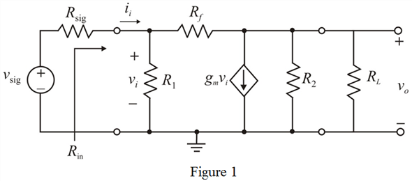

The resistors  and
and  are in parallel.
are in parallel.
Apply super position theorem for output voltage.
…… (1)
Refer to Figure P5.84 in the textbook.
Draw the equivalent circuit diagram.

The resistors and are in parallel.
Apply super position theorem for output voltage.
…… (1)
Let us assume that the current flowing through feedback resistor is .
Part of input resistance is,
Current flowing through the feedback resistor is,
Substitute for .
Calculate the value of .
Substitute for  .
.
Calculate the expression for input resistance.
Therefore, the expression for input resistance is and proved.
Calculate the voltage gain.
Therefore, the expression for voltage gain of the amplifier is and proved.
Output resistance of the amplifier is,
Thus, the expression for the output resistance of the amplifier is and proved.
Calculate the value of input resistance of the amplifier.
Substitute  for
for  ,
,  for
for  ,
,  for
for  ,
,  for and for
for and for  .
.
Therefore, the value of the input resistance of the amplifier is .
Calculate the value of voltage gain of the amplifier.
Substitute  for
for  ,
,  for
for  and
and  for
for  .
.
Therefore, the value of the voltage gain of the amplifier is .
Calculate the value of output resistance of the amplifier.
Substitute  for
for  and
and  for
for  .
.
Therefore, the value of output resistance of the amplifier is .
Substitute for  ,
,  for
for  ,
,  for
for and for
and for  .
.
Therefore, the value of the overall gain of the amplifier is .